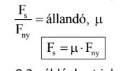
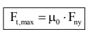
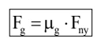

| Csúszási súrlódási erő | Tapadási(nyugvó) súrlódási erő | Gördülési súrlódási erő |
| Jele:Fs | Jele:Ft | Jele:Fg |
| Akkor jön létre, ha az érintkező felületeknek egymáshoz képest sebessége van | Akkor jön létre, ha az érintkező felületeknek egymáshoz képesti sebessége nincs | Akkor jön létre, ha az érintkező felületek egymáson elgördülnek |
| Iránya a vizsgáált test sebességével ellentétes | Iránya a test megcsúszását létrehozni kívánó erővel ellentétes | Iránya a vizsgált test sebességével ellentétes |
| nagysága függ: a felületeket összenyomó erőtől az érintkező felületek minőségétől | Nagysága 0-tól egy maximális értékig változik. 0<Ft<=Ft max | nagysága függ a felületeket összenyomó erőtől, az érintkező felületek minőségétől , a gördülő test sugarának nagyságától |
| Fny a felületeket összenyomó erő μ=0,2 például azt jelenti, hogy a vízszintes talajon nyugvó test eltolása állandó sebesség mellett a felemelési erőnek csak a 20%-a. Speciális anyagoknál μ>1 lehet | mind a tapadási, mind a csúszási súrlódási erővel fékezni és gyorsítani egyaránt lehet | g gördülési súrlódási tényező(annál kisebb,minél nagyobb a kerék sugara) megj:ugyanazon körülmények között μg < μ |
|  |  |  |
Testek tömegének és sebességének a szorzatát lendületnek vagy impulzusnak nevezzük.
a testek mozgásállapotát jellemző mennyiség
jele: I;I=mv
a lendület vektormennyiség iránya megegyezik a test sebességvektorának irányával
jele:D a rugó anyagára és méretére jellemző állandó A rugóállandó azt mutatja meg,hogy a vizsgált rugó 1m-nél való megnyújtásához mekkora erő lenne szükséges